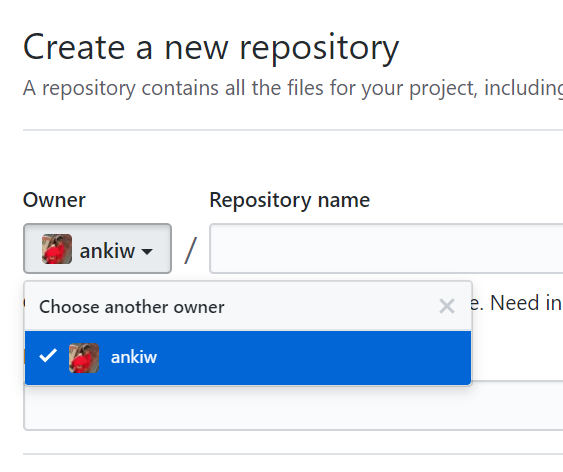
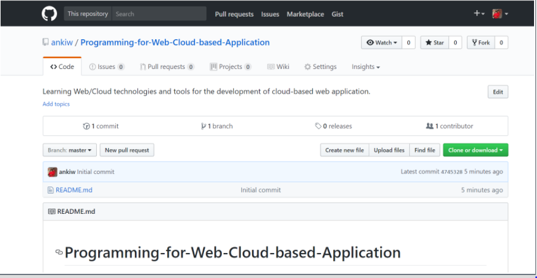

In the upper right corner of github page, click + , and then click New repository

In the Owner drop-down, select the account you wish to create the repository on.
Type a name for your repository

A git repository contains, among other things, the following:
Go to your browser and enter github.com
Github-Link
GitHub is an online; browser based distributed version control system for software developers using the Git revision control system. The service provides free public repositories, issue tracking, graphs, code review, downloads, wikis, collaborator management, and more.
There are also social networking elements of the service including feeds, the ability to follow other users, and network related graphs. This article will walk you through the process of signing up for GitHub.
Follow the step for creating a new repository in github:
You can click the image below, it should redirect you to the location of the image in the documentation in a new tab
